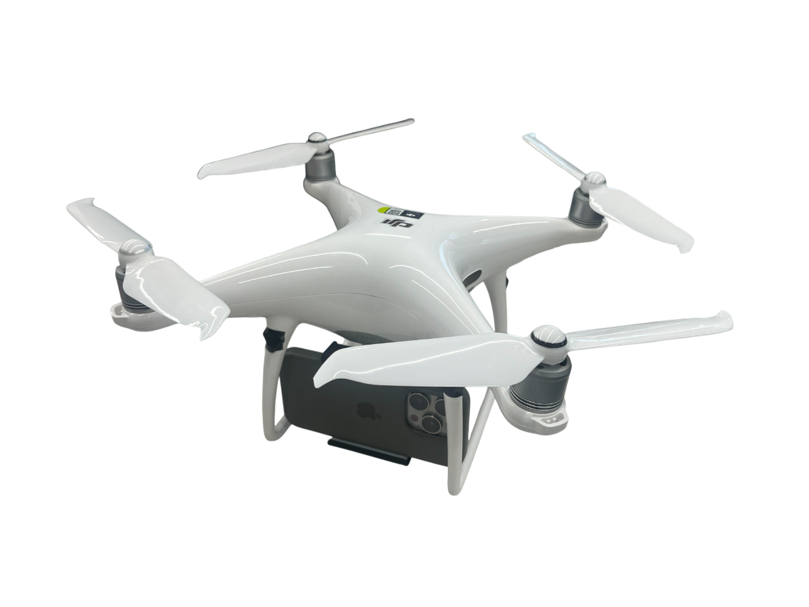
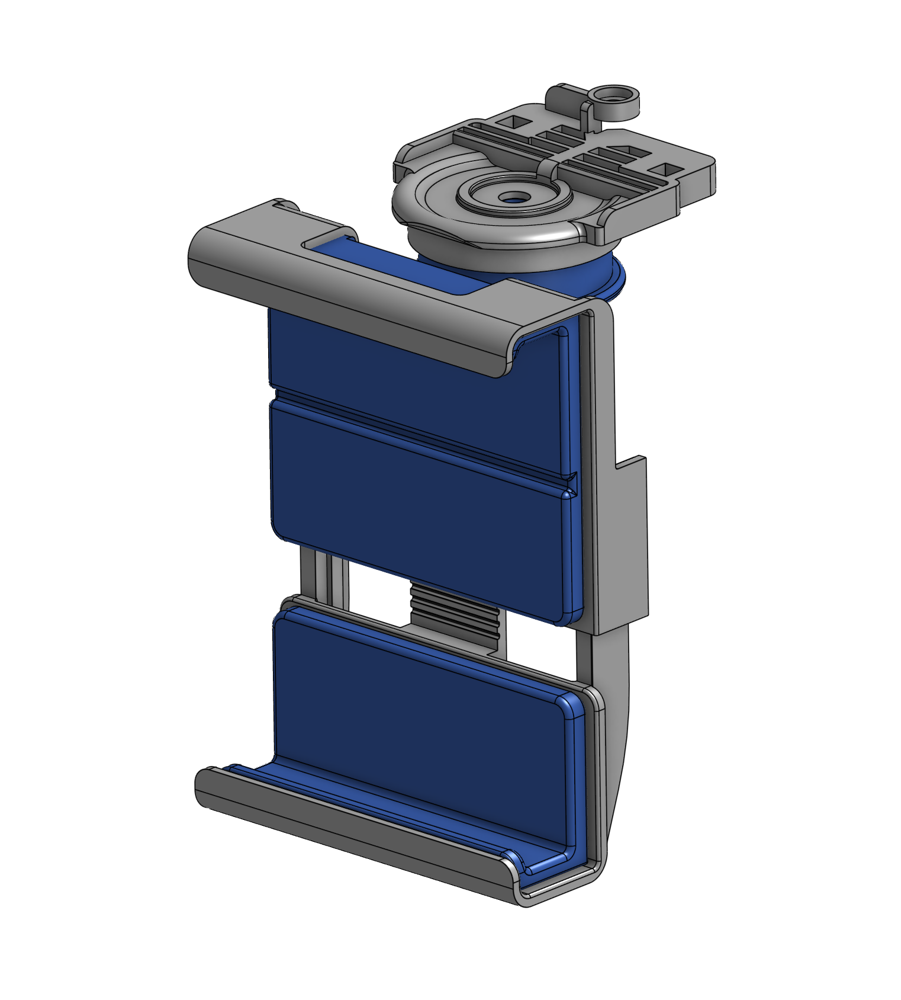

SkyMapper
Commercial UAV-Smart Phone Integration for Low-Cost 3D Reconstruction with Targeted Remote Monitoring
🚁 Hardware Overview
Our system is designed with accessibility in mind, utilizing off-the-shelf commercial drones and standard smartphones.

Commercial UAV Integration
We leverage a standard DJI drone, removing the need for expensive custom aerial platforms. This ensures high mobility and ease of deployment.

Custom Smartphone Mount
A lightweight, 3D-printed mounting system securely integrates the smartphone's processing power and camera with the drone's flight capabilities.
📖 Abstract
The integration of mobile devices and commercial UAVs offers a cost-effective solution for 3D reconstruction and targeted remote monitoring. This project validates consumer smartphone-UAV integration for fully autonomous indoor scanning with closed-loop control, achieving 7-12cm reconstruction accuracy and 72-99% coverage across real indoor environments. We provide a complete, reproducible system using off-the-shelf components along with open-source software.
📌 Project Highlights
- Low-cost Hardware Setup: Efficient data acquisition combining a standard mobile phone and a commercial drone.
- Autonomous Scanning: Real-time data collection via autonomous monitoring in unknown environments.
- Web-based Archiving: Web server-based data archiving enabling diverse downstream applications.
- High Fidelity: Drift-free trajectory estimation and efficient online reconstruction.
📝 Citation
If you find this project useful for your research, please consider citing: ```bibtex @article{park2025skymapper, title={Commercial UAV-Smart Phone Integration for Low-Cost 3D Reconstruction with Targeted Remote Monitoring}, author={Park, Nojin and Seo, Ji Hyun and Yoo, Byounghyun}, journal={TBD}, year={2025} }